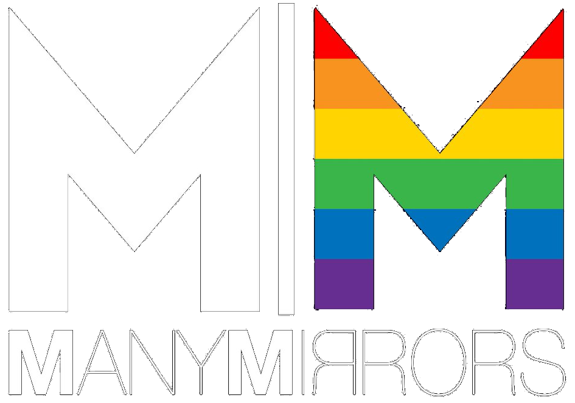

Our mission is to provide a safe space where people can belong, regardless of their faith, spirituality, sexuality or gender identity.
About
We recognise the journey to discover our identity, both as LGBT and as a person of faith, can be a lonely and isolating experience. As a group we provide a supportive and social atmosphere for those who identify as LGBTQ+ and of faith to discuss their relationship with both communities and how this has shaped us.
Through sharing public events and organising our own social events, we hope to link the LGBT and faith communities.
Events
For more information follow the links and to share your own event please get in contact.